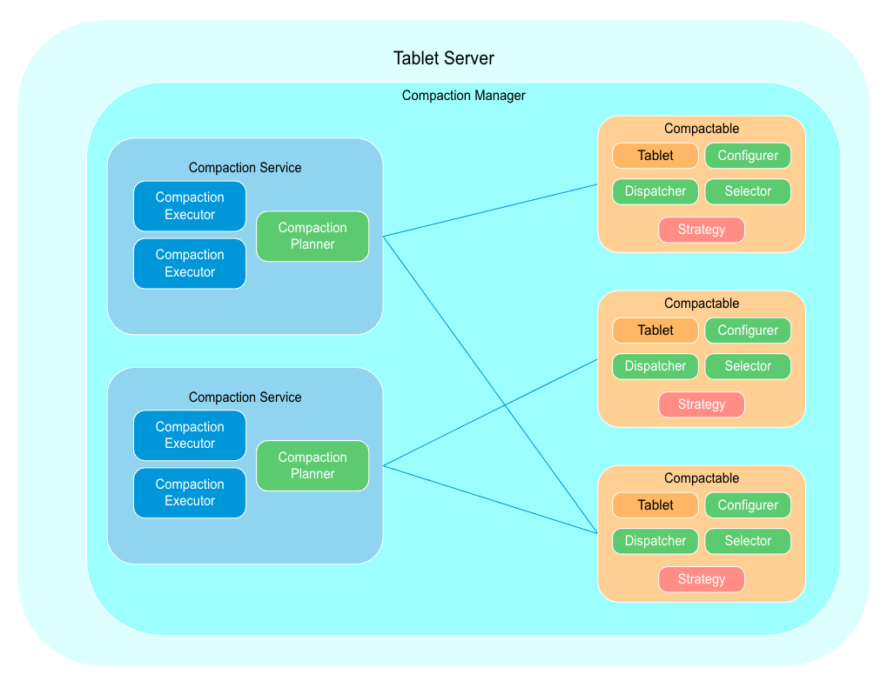

Package org.apache.accumulo.core.spi.compaction
This package provides a place for plugin interfaces related to executing compactions. The diagram
below shows the functional components in Accumulo related to compactions. Not all of these
components are pluggable, but understanding how everything fits together is important for writing
a plugin.

The following is a desciption of each functional component.
- Compaction Manager A non pluggable component within the tablet server that brings all
other components together. The manager will route compactables to compaction services. For each
kind of compaction, an individual compactible will be routed to a single compaction for service.
For example its possible that compactable C1 is routed to service S1 for user compactions and
service S2 for system compactions.
- Compaction Service A non pluggable component that compacts tablets. One or more of
these are created based on user configuration. Users can assign a table to a compaction service.
Has a single compaction planner and one ore more compaction executors.
- Compaction Planner A pluggable component that can be configured by users when they
configure a compaction service. It makes decisions about which files to compact on which
executors. See
CompactionPlanner - Compaction Executor A non pluggable component that executes compactions using multiple threads and has a priority queue.
- Compaction Planner A pluggable component that can be configured by users when they
configure a compaction service. It makes decisions about which files to compact on which
executors. See
- Compactable A non pluggable component that wraps a Tablet and per table pluggable
compaction components. It tracks all information about one or more running compactions that is
needed by a compaction service in a thread safe manor. There is a 1 to 1 relationship between
compactables and tablets.
- Compaction Dispatcher A pluggable component component that decides which compaction
service a table should use for different kinds of compactions. This is configurable by users per
table. See
CompactionDispatcher - Compaction Selector A pluggable component that can optionally be configured per table
to periodically select files to compact. This support use cases like periodically compacting all
files because there are too many deletes. See
CompactionSelector - Compaction Configurer A pluggable component that can optionally be configured per
table to dynamically configure file output settings. This support use cases like using snappy for
small files and gzip for large files. See
CompactionConfigurer - Compaction Strategy A deprecated pluggable component replaced by the Selector and
Configurer. See
CompactionStrategyConfigfor more information about why this was deprecated.
- Compaction Dispatcher A pluggable component component that decides which compaction
service a table should use for different kinds of compactions. This is configurable by users per
table. See
- Compaction Service A non pluggable component that compacts tablets. One or more of
these are created based on user configuration. Users can assign a table to a compaction service.
Has a single compaction planner and one ore more compaction executors.
- See Also:
org.apache.accumulo.core.spi
-
Interface Summary Interface Description CompactionDirectives The directions of aCompactionDispatcherCompactionDirectives.Builder CompactionDispatcher Can be configured per table to dispatch compactions to different compaction services.CompactionDispatcher.DispatchParameters The method parameters forCompactionDispatcher.dispatch(DispatchParameters).CompactionDispatcher.InitParameters The method parameters forCompactionDispatcher.init(InitParameters).CompactionPlanner Plans compaction work for a compaction service.CompactionPlanner.InitParameters CompactionPlanner.PlanningParameters CompactionService ExecutorManager Offered to a Compaction Planner at initialization time so it can request executors. -
Class Summary Class Description CompactionExecutorId A unique identifier for a a compaction executor that aCompactionPlannercan schedule compactions on using aCompactionJob.CompactionJob An immutable object that describes what files to compact and where to compact them.CompactionPlan CompactionServiceId LarsmaCompactionPlanner Finds the largest continuous set of small files that meet the compaction ratio and do not prevent future compactions.LarsmaCompactionPlanner.ExecutorConfig SimpleCompactionDispatcher Dispatcher that supports simple configuration for making tables use compaction services. -
Enum Summary Enum Description CompactionKind TODO reconcile with CompactionReason